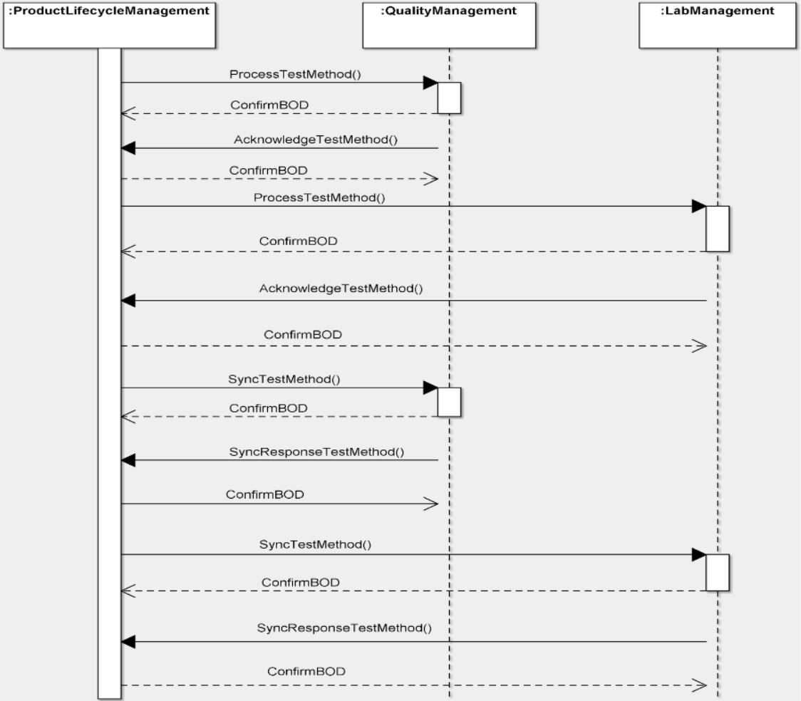

Scenario 65 - Publish Test Method65.0 OverviewScenario #65 describes the integration among stakeholders that either manage or use Test Methods.The purpose of this scenario is to enable the visualization of the participants in the process and the dialogs between them for this specific integration. This scenario is not meant to be the only model for exchanging Test Methods. This is simply one model that may be used to guide one's own integration efforts. There are a variety of scenarios where Test Methods will be exchanged to support testing, and different systems or business functions will be involved in these scenarios. Some stakeholders involved in exchange of Test Methods include:
65.1 Scenario DiagramThe scenario below contains the participants involved in the interaction, the dialog flows or conversation between them, certain assumptions about the sequence of events, and assumptions about the technical approach, for example, publish and subscribe.This is a model to be used as a design recommendation, not a required approach..  65.2 AssumptionsThis scenario assumes a loosely coupled, asynchronous approach with transaction management required but not explicitly defined.This scenario describes a model in which the �owner� of test master data (aka the system of record) interacts with one or more users that need copies of that data. The environment for this integration may be within a single organization or it may include several external organizations. There may be instances where all of the data is contained in the documents and other instances where additional information accompanies the TestMethod documents. This scenario assumes that the Product Lifecycle Management component owns the TestMethod description and the instances of data within it. TestMethods are versioned, and this scenario illustrates pushing revisions to users. However, it does not specify how information about prior versions are managed, maintained, or recovered. 65.3 Participant DefinitionsThis scenario contains three participants: Product Lifecycle Management (PLM), Quality Management, and Laboratory Management.Typical capabilities of these participants are described:
Each application must be able perform the services defined by the message BOD (business object document), but the internals of the application are not required or desired to be exposed at this level of standardized abstraction. The most important factors in defining these participants is to ensure that an integration designer can communicate the requirements precisely enough to detail the interfaces needed and their interrelationships. 65.4 Business Workflow (Sequence)The business workflow is graphically represented by starting at the Scenario top and reading from top down and from left to right.The diagram illustrates the workflow stages involved with the sending and updating a TestMethod. Test methods are formal descriptions of how to perform a particular type of test that is specific to a particular business, line of business, or site. A test methods is configuration managed master data that may be machine interpretable. Revisions will result in new versions with a different RevisionID and effectivity and will likely cause changes the effectivity of prior versions. Test Specifications, Test Results, and Certificates of Analyses typically include references to Test Methods. Test Methods are tracked, and should be preserved / archived for later examination. Audits may trace back to methods used in order to to determine procedures, equipment, and/or standards used when particular tests were conducted. While no particular strategy is prescribed for managing versions, it is recommended that either references to Test Methods directly include version information or that effectivity histories for Test Method versions are kept so that the date of testing could be used to infer the version of the Test Method employed for any given test. The sequence diagram illustrates, with arrows, the messages exchanged, and their responses. A ConfirmBOD provides an acknowledgement to the initial request indicating that the request was received and understood as a valid. An Acknowledge(noun) message indicates that the transaction was processed (committed), and a business person has reviewed and provided information related to the next step (accepted, rejected, etc.). The data exchanges involved within the business process are as follows.
65.5 Exception HandlingException handling is highly localized as the result of how business capabilities are implemented including the deployed infrastructure, management and business rules. As such, this section of the Scenario documentation is planned to be used as a guide to help understand the additional intent of these Scenarios. If no exceptions are noted here, then it can be assumed that the Scenario designers agreed that the Scenario is straightforward and has no additional needs:
Copyright OAGi 2016 - All Rights Reserved -- OAGIS release 10.3 - Document Number: 20160901-65 |